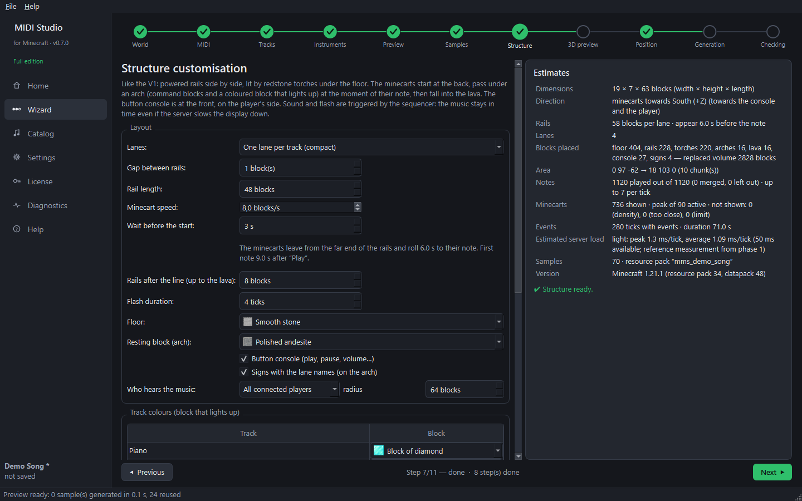

Step 8 — The structure (wizard step 7)
Goal: choose how the music looks in the world.

What gets built
- Powered rails side by side, lit by redstone torches under the floor.
- The minecarts always appear at the far end of the rails and travel towards you. In the lava they disappear: new minecarts appear at the far end for the next notes.
- Above the trigger line: an arch of command blocks and a coloured block that lights up when the note plays (one colour per track).
- After the line, the minecarts fall into a lava pit.
- At the front, on your side: a button console (play, pause, stop, volume −/+, tempo −/+, pitch −/+) with signs.
The sound and the flashes are triggered by the datapack's sequencer: the minecarts are only visual, so the music stays in time even if the server slows down.
Layout settings
- Lanes — one per track (compact), one per played note (piano roll) or one per pitch.
- Gap between rails — 1 = rails right next to each other.
- Rail length and Minecart speed — they decide how long before its note a minecart appears.
- Wait before the start — after “Play”, time to get in place (for example to film) before the minecarts leave. The first note comes after this wait plus the minecarts' trip (shown just below). Can also be changed in the game:
/function music:delay {s:5}. - Rails after the line — distance to the lava.
- Floor, Resting block of the arch, Flash duration, Track colours.
- Button console, Signs with the lane names, Who hears the music (everyone, or players near the structure).
Optimisation
Choose a profile: Best quality, Balanced or Performance. Custom (full edition) unlocks every setting: maximum active minecarts, minecart density, simultaneous notes per tick… The minimum gap between minecarts (0.5 block by default) can be set in every edition: at 0, every note has its minecart, even in very fast passages. If some notes have no minecart, the step says so and why. The Estimates panel shows the size, the number of blocks, the minecarts and the estimated server load in real time.
Next guide: 3D preview and position.